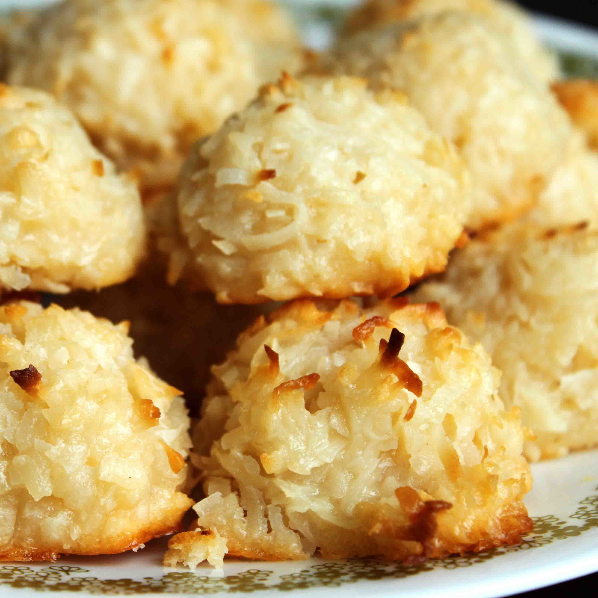

Coconut Macaroons

A macaroon (/ˌmækəˈruːn/ MAK-ə-ROON) is a small cake or biscuit, typically made from ground almonds (the original main ingredient[1]), coconut or other nuts (or even potato), with sugar and sometimes flavourings (e.g. honey, vanilla, spices), food colouring, glacé cherries, jam or a chocolate coating;[2] or a combination of these or other ingredients. Some recipes use sweetened condensed milk.[3][4] Macaroons are sometimes baked on edible rice paper placed on a baking tray.
Ingredients
- 5 ½ cups flaked coconut
- ⅔ cup all-purpose flour
- ¼ teaspoon salt
- 1 (14 ounce) can sweetened condensed milk
- 2 teaspoons vanilla extract
Steps
- Preheat the oven to 350 degrees F (175 degrees C). Line cookie sheets with parchment paper or aluminum foil.
- Stir together coconut, flour, and salt in a large bowl. Mix in sweetened condensed milk and vanilla using your hands until well blended.
- Use an ice cream scoop to drop dough onto the prepared cookie sheets. Cookies should be about golf ball size.
- Bake for 12 to 15 minutes in the preheated oven, until coconut is toasted.